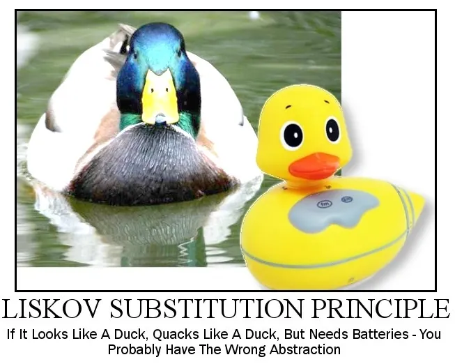

POS - 3xHIF

Do streams make code more readable or more cryptic? When would you prefer a traditional for-loop over a stream pipeline? Discuss with your neighbor: what makes a stream pipeline "good" vs. "over-engineered"?
List<String> result = list.stream()
.filter(s -> s.startsWith("A"))
.map(String::toUpperCase)
.collect(Collectors.toList());
Source → Intermediate Operations → Terminal Operation
Selects elements that match a predicate.
List<Integer> numbers = List.of(1, 2, 3, 4, 5, 6);
List<Integer> even = numbers.stream()
.filter(n -> n % 2 == 0)
.toList();
// Result: [2, 4, 6]
List<Person> adults = people.stream()
.filter(p -> p.age() >= 18)
.toList();
List<Person> named = people.stream()
.filter(p -> p.name() != null)
.filter(p -> !p.name().isEmpty())
.toList();
Write methods that use stream filter and map operations to transform and select data from collections.
Transforms each element using a function.
List<String> names = List.of("alice", "bob", "charlie");
List<String> upper = names.stream()
.map(s -> s.substring(0, 1).toUpperCase() + s.substring(1))
.toList();
// Result: ["Alice", "Bob", "Charlie"]
List<String> names = List.of("Alice", "Bob", "Charlie");
List<Integer> lengths = names.stream()
.map(String::length)
.toList();
// Result: [5, 3, 7]
Use flatMap on a nested School/Department/Teacher structure with Optional fields to extract and flatten data.
Flattens nested structures into a single stream.
List<List<Integer>> nested = List.of(
List.of(1, 2), List.of(3, 4), List.of(5, 6)
);
List<Integer> flat = nested.stream()
.flatMap(List::stream)
.toList();
// Result: [1, 2, 3, 4, 5, 6]
List<String> sentences = List.of(
"Hello world", "Java streams"
);
List<String> words = sentences.stream()
.flatMap(s -> Arrays.stream(s.split(" ")))
.toList();
// Result: ["Hello", "world", "Java", "streams"]
Flatten lists of lists, extract words from sentences, and get unique characters using flatMap.
Performs an action on each element (terminal operation).
List<String> names = List.of("Alice", "Bob", "Charlie");
names.stream()
.filter(n -> n.length() > 3)
.forEach(System.out::println);
Prefer toList() over forEach for collecting results!
Debug stream pipelines using peek() and a custom DebugCollector to inspect intermediate results.
Combines all elements into a single value.
List<Integer> numbers = List.of(1, 2, 3, 4, 5);
int sum = numbers.stream()
.reduce(0, (a, b) -> a + b);
int product = numbers.stream()
.reduce(1, (a, b) -> a * b);
// sum = 15, product = 120
List<Integer> numbers = List.of(3, 7, 2, 9, 5);
Optional<Integer> max = numbers.stream()
.reduce(Integer::max);
max.ifPresent(System.out::println); // 9
Use reduce for sum of lengths, longest string, factorial, and concatenation with a custom delimiter.
Next week: Streams Collectors
groupingBy, partitioningBy, and more!